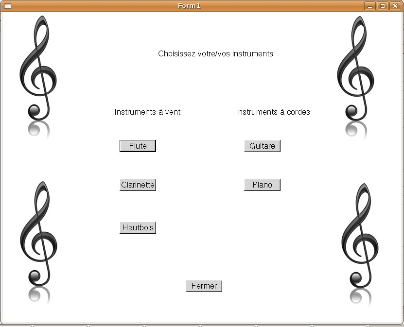

|
a video illustrating the program (.avi) |
A particle system simulating the behavior of water, oil, fire, magnesium, sand, concrete and wood, very well modeled, very well implemented and running in real time even with a large quantity of particles.
|
a video illustrating the program (.avi) |
A complet billards game and physics simulation.
A connect four game with artificial intelligence (min-max algorithm) and possibility to load and save games.
A simulation of the propagation of a virus in France including the possibility of vaccinations.
Calculate the spectrum of notes played on various instruments and display it as well as the enveloppe of the vibration.
Simulation of a population of different species living in a virtual world with different types of land, forrests etc. The simulation includes genetic algorithms.
A project simulating the energy distribution in a power grid with different sources of energy.